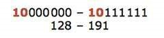
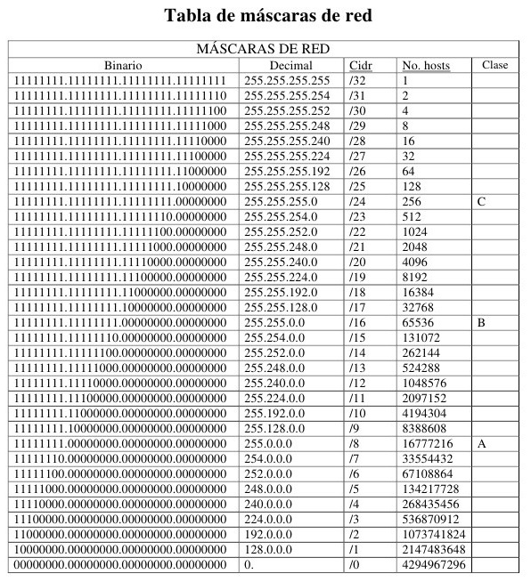
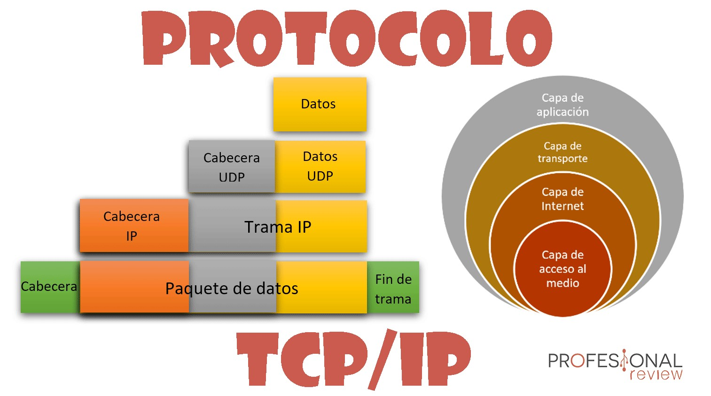
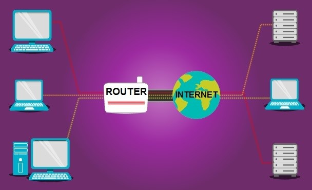
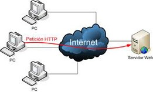
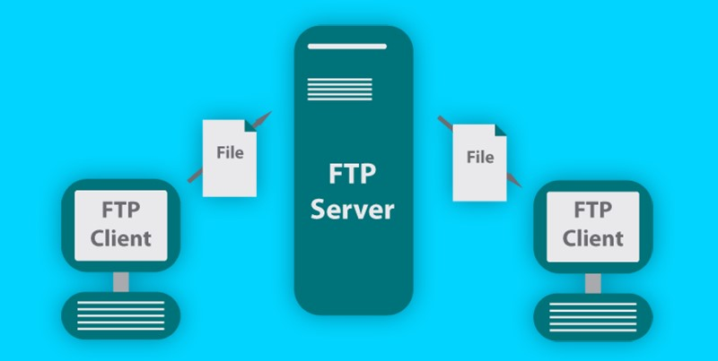

Dirección IP
Las direcciones IP (IP es un acrónimo para Internet Protocol) son un número único e irrepetible con el cual se identifica una computadora conectada a una red que corre el protocolo IP.
Una dirección IP (o simplemente IP como a veces se les refiere) es un conjunto de cuatro números del 0 al 255 separados por puntos.
Tipos de dirección IP
-
Dirección IP de clase A
El primer bit del primer octeto siempre se establece en 0 (cero). Por lo tanto, el primer octeto varía de 1 - 127, es decir:
El primer número del octeto siempre permanece en 0, por lo tanto, hay 7 bits con los que combinar unos y ceros. Por si así no te queda claro, una dirección IP de clase A comprende todas las direcciones que empiecen de 1 a 127.
-
Dirección IP de clase B
La clase B tiene reservados los dos primeros bits del primer octeto, por lo tanto, sólo quedan 6 bits para hacer combinaciones.
 -
Dirección IP de clase C
El primer octeto de IP de Clase C tiene sus primeros 3 bits a 110, es decir:
-
Dirección IP de clase D
La Clase D tiene la dirección IP 224.0.0.0 a 239.255.255.255, esta última dirección, es reservada para la multidifusión. Los datos de la multidifusión no están destinados para un host en concreto, por eso no hay necesidad de extraer direcciones de host de la dirección IP, y la clase D no tiene ninguna máscara de subred.
Tabla de máscaras de red
MAC Address
La Mac Address o dirección Mac es una identificador único de 48 bits para identificar la totalidad de dispositivos de red como por ejemplo tarjetas de red Ethernet, tarjetas de red wifi o inalambricas, Switch de red, Routers, impresoras, etc.
ISP (Internet service provider)
Un ISP o Proveedor de Servicios de Internet (Del inglés Internet Service Provider), es el término con el que se identifica a las compañías que proporcionan acceso a Internet, tanto a los hogares como a otras empresas.
Es decir, puedes tener el ordenador más potente del mundo con una flamante tarjeta de red y la casa u oficina cableada con fibra óptica, que sin un ISP no tendrás la posibilidad de navegar. Y para poder navegar, es necesario pagar una cuota a uno de estos proveedores.
Puertos bien conocidos
Los puertos inferiores al 1024 son puertos reservados para el sistema operativo y usados por "protocolos bien conocidos" como por ejemplo HTTP (servidor Web), POP3/SMTP (servidor de e-mail) y Telnet.
Protocolo TCP/IP
Este modelo es un protocolo para comunicación en redes que permite que un equipo pueda comunicarse dentro de una red. Está basado en el modelo teórico SI de capas con la que comparte 4 de ellas; sin embargo, ofrece muchas más opciones y es un modelo práctico.
Redireccionamiento de puertos
Es la acción de redirigir un puerto de red de un nodo de red a otro. Esta técnica puede permitir que un usuario externo tenga acceso a un puerto en una dirección IP privada (dentro de una LAN) desde el exterior vía un router con NAT activado.
La redirección de puertos permite que computadoras remotas (por ejemplo, máquinas públicas en Internet) se conecten a un computador en concreto dentro de una LAN privada.
Servidor de páginas web
Es un programa que utiliza el protocolo de transferencia de hiper texto, HTTP (Hypertext Transfer Protocol), para servir los archivos que forman páginas Web a los usuarios, en respuesta a sus solicitudes, que son reenviados por los clientes HTTP de sus computadoras. Las computadoras y los dispositivos dedicados también pueden denominarse servidores Web.
Puertas de enlace
Es un dispositivo, con frecuencia un ordenador, que permite interconectar redes con protocolos y arquitecturas diferentes a todos los niveles de comunicación. Su propósito es traducir la información del protocolo utilizado en una red al protocolo usado en la red de destino.
Direcciones IP públicas y privadas
-
Pública:
Es el identificador de nuestra red desde el exterior, es decir, la de nuestro router de casa, que es el que es visible desde fuera.
-
Privada:
Es la que identifica a cada uno de los dispositivos conectados a nuestra red, por lo tanto, cada una de las direcciones IP que el router asigna a nuestro ordenador, móvil, tablet o cualquier otro dispositivo que se esté conectado a él.
DNS (Domain Name System)
(Domain Name System) es un sistema de nombres de dominio que le permite a los humanos y a las computadoras comunicarse más fácilmente. Los humanos usan nombres, las computadoras usan números y el DNS es un intermediario que hace coincidir los nombres con los números dentro de una lista específica.
Firewall
Firewall (llamado también «cortafuego»), es un sistema que permite proteger a una computadora o una red de computadoras de las intrusiones que provienen de una tercera red (expresamente de Internet). El firewall es un sistema que permite filtrar los paquetes de datos que andan por la red. Se trata de un «puente angosto» que filtra, al menos, el tráfico entre la red interna y externa.
Webhosting y dominio
-
Webhosting:
Es tener un espacio alquilado en el disco duro de un servidor, que está preparado con todos los programas necesarios para que puedas subir tu web y tener todos tus correos en un mismo sitio.
-
Dominio:
Es la dirección necesaria para que funcionen esa web y ese correo.
FTP (File Transfer Protocol)
(File Transfer Protocol en inglés o Protocolo de Transferencia de Ficheros en español) es un protocolo del nivel de aplicación. Está basado en una arquitectura cliente servidor y proporciona un mecanismo estándar de transferencia de archivos entre sistemas a través de redes TCP/IP.
HTML (Hypertext Markup Language)
Es el lenguaje con el que se define el contenido de las páginas web. Básicamente se trata de un conjunto de etiquetas que sirven para definir el texto y otros elementos que compondrán una página web, como imágenes, listas, vídeos, etc.
CSS (Cascade style sheet)
Es lo que se denomina lenguaje de hojas de estilo en cascada y se usa para estilizar elementos escritos en un lenguaje de marcado como HTML. CSS separa el contenido de la representación visual del sitio haciendo que se pueda adaptar cualquier diseño en cuanto a formas, tamaños, imágenes, estilos de degradado, difuminaciones, transiciones, etc.
CONCLUSIONES
1799629 Gerardo Flores Ramírez
Durante el desarrollo de esta práctica pude observar varios de los conceptos de red que ya hemos conocido durante las materias de transmisión y comunicación de datos, y de redes computacionales. Estos conceptos me eran familiares por lo que reconocer como interactúan entre ellos no fue problema, además de que pude practicar de nuevo en cuanto al diseño web, y como ya he hecho algunas páginas, hacer esta no fue ningún problema. Lo nuevo que aprendí fue acerca de los webhost, ya que nunca había puesto un sitio en línea y por lo tanto no sabía de lo que conlleva publicar una página web.
1859649 José Abraham Hernández Cabello
Mi conclusion acerca de esta actividad 1 , es que investigar los conceptos me ayudo mucho a saber mas del tema hablando de la computacion en general, pues la verdad es que eran unos conceptos muy interesantes, algunos ya los conocia, pero la mayoria no, como por ejemplo firewall ya sabia que era un sistema de defensa o para detener aplicaciones y pedir un permiso al usuario si quiere que se ejecute el programa o no, y ya cualquier daño en la computadoria quedaria absolutamente en el y no en daño por parte de la fabrica, entre otras cosas, esta actividad tambien me ayudo identificar los tipo de direccion de ip que existen y para que sirve cada una, la verdad pienso que el haber indagado profundamente sobre estos conceptos me ayudara a ampliar mi panorama en el estudio computacional.
1803317 Stephanie Escamilla González
En esta primera practica, practiqué el uso de css para darle formato a la página, apoyando a acomodando textos e insertando imagenes para que quedará mas centrado y justificado para una mejor imagen de ella , también con esta primera practica , al realizar los conceptos nos ayuda a comprender y estar más informados de los temas.
1530646 Alejandro César Tejada González
Con esta práctica tuvimos el beneficio de aprender diferentes términos a utilizar a lo largo de la currícula de programación web, esto nos va a apoyar con conocimiento básico teórico para poder realizar los proyectos futuros ya que una base teórica es necesaria para poder realizar cualquier proyecto complejo en algún momento.
1660616 José Andrés Casas Rodríguez
Un sitio Web es una colección de páginas de internet relacionadas y comunes a un dominio de internet o subdominio en la World Wide Web en internet. Una Pagina Web es un documento HTML/XHTML que es accesible generalmente mediante el protocolo HTTP de internet. Todos los sitios web públicamente accesibles constituyen una gigantesca World Wide Web de información. En un navegador Web permite el acceso a internet, interpretando la información de archivos y sitios Web para que estos puedan ser leídos.